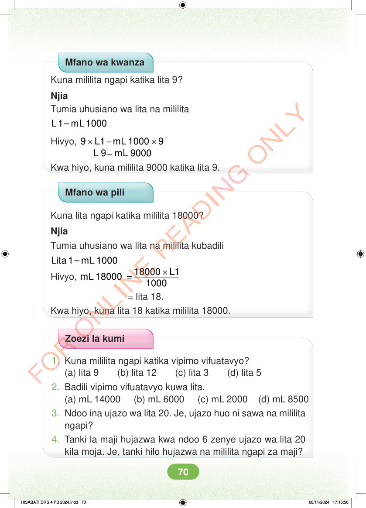

<!DOCTYPE html>
<html lang="sw-TZ"><head><meta charset="utf-8"><meta name="viewport" content="width=device-width,initial-scale=1">
<title>Hisabati: Kitabu cha Mwanafunzi Darasa la Nne</title>
<meta name="title-id" content="pg076_sec001"><meta name="page-section-id" content="79">
<link href="./content/tailwind_output.css" rel="stylesheet"><link href="./assets/libs/fontawesome/css/all.min.css" rel="stylesheet"><link href="./assets/fonts.css" rel="stylesheet">
<style>body{margin:0;background:#eef1ed}main{width:100%;display:flex;justify-content:center;padding:1rem 1rem 5rem;box-sizing:border-box}#content{width:100%;display:flex;justify-content:center}.pdf-page{position:relative;width:min(calc(100vw - 2rem),56rem);aspect-ratio:540.8980102539062/750.6610107421875;background:white;box-shadow:0 4px 24px #0002;overflow:hidden}.pdf-page img{position:absolute;inset:0;width:100%;height:100%;object-fit:fill}</style>
</head><body><main><h1 class="sr-only" id="page-heading">Ukurasa wa 76</h1><div id="content" class="opacity-0"><section role="article" data-section-type="pdf_accessible_page" data-section-id="pg076_sec001" aria-labelledby="page-heading" class="pdf-page"><p class="sr-only" data-id="pg076_gp001_tx001">Mfano wa kwanza Kuna mililita ngapi katika lita 9? Njia Tumia uhusiano wa lita na mililita = L 1 mL 1000 Hivyo, × = × 9 L1 mL 1000 9 = L 9 mL 9000 Kwa hiyo, kuna mililita 9000 katika lita 9. Mfano wa pili Kuna lita ngapi katika mililita 18000? Njia Tumia uhusiano wa lita na mililita kubadili = Lita 1 mL 1000 Hivyo, × = 18000 L1 mL 18000 1000 = lita 18. Kwa hiyo, kuna lita 18 katika mililita 18000. Zoezi la kumi 1. Kuna mililita ngapi katika vipimo vifuatavyo? (a) lita 9 (b) lita 12 (c) lita 3 (d) lita 5 2. Badili vipimo vifuatavyo kuwa lita. (a) mL 14000 (b) mL 6000 (c) mL 2000 (d) mL 8500 3. Ndoo ina ujazo wa lita 20. Je, ujazo huo ni sawa na mililita ngapi? 4. Tanki la maji hujazwa kwa ndoo 6 zenye ujazo wa lita 20 kila moja. Je, tanki hilo hujazwa na mililita ngapi za maji? HISABATI DRS 4 PB 2024.indd 70 HISABATI DRS 4 PB 2024.indd 70 06/11/2024 17:16:50 06/11/2024 17:16:50</p></section></div></main><div class="relative z-50" id="interface-container"></div><div class="relative z-50" id="nav-container"></div><script src="./assets/offline-preloader.js?v=audiofix-20260824-1"></script><script src="./assets/scorm.js"></script><script src="./assets/base.bundle.local.js?v=audiofix-20260824-1"></script></body></html>